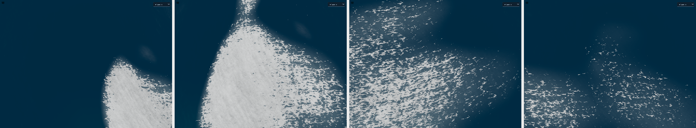
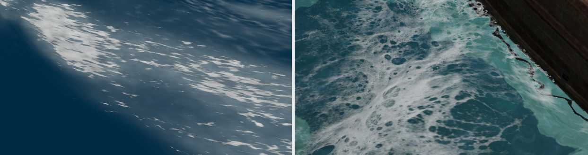
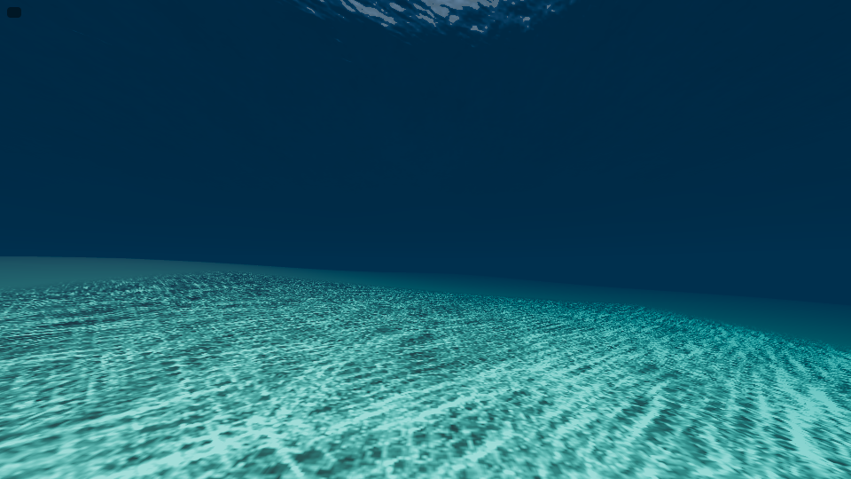
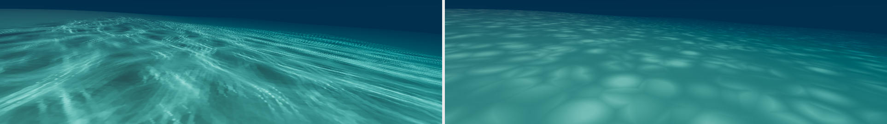
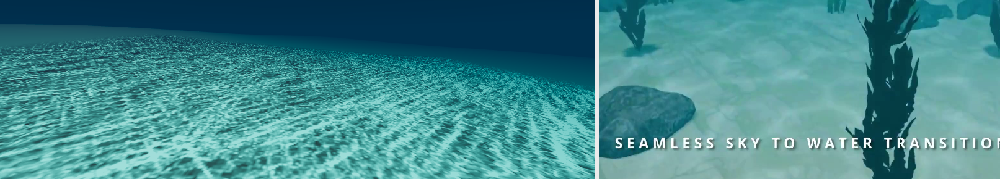
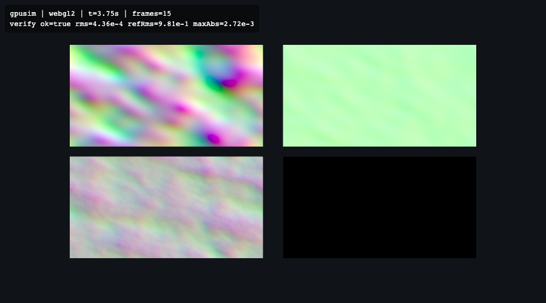
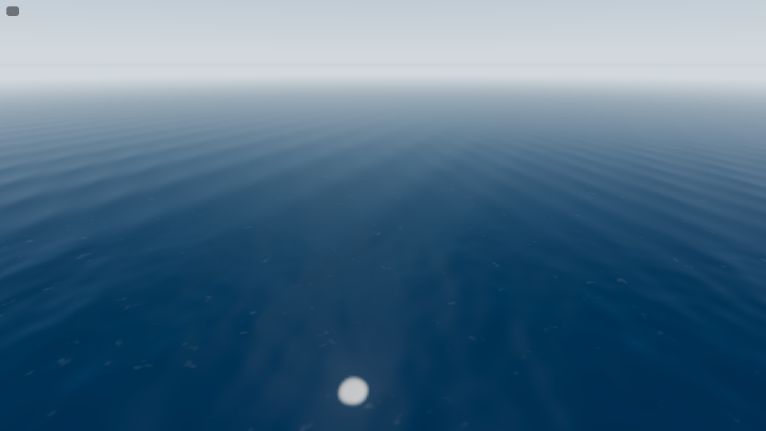
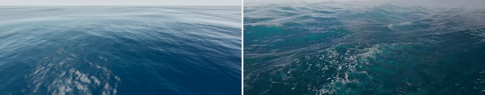
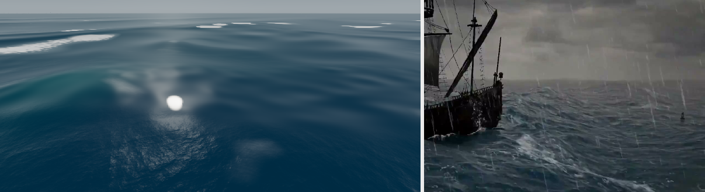

Reference bar: commercial FFT ocean (Three.js Water Pro v3 class). Each entry: timestamp, screenshots, what changed, honest assessment naming the visual tells that still break realism.
Pass 1 — 2026-07-01 — Headless verification harness proven (before any water code)
What changed: Vite + three@0.181.0 scaffold targeting WebGPURenderer with automatic WebGL2 fallback (adapter/device probe — headless SwiftShader exposes a WebGPU adapter whose device immediately dies, so the probe requests a real device before trusting it). Harness: static server over dist/, headless Chromium via playwright-core with --use-angle=swiftshader, waits on a window.__OO frame/simTime contract, captures PNG via CDP Page.captureScreenshot, fails on any console/page error. Deterministic fixed-timestep mode (?fixeddt=1).
shots/harness-cube.png — lit spinning cube, WebGL2 backend, zero console errors
Honest assessment: No water exists yet; every checklist item is FAIL. The harness itself is proven (frame rendered, screenshot captured, error reporting works). Backend note: headless verification will run on the WebGL2 fallback backend of WebGPURenderer; WebGPU device creation is broken under SwiftShader in this container. Worst remaining visual tell: there is no ocean.
What changed: JONSWAP/Phillips spectra (fetch-limited, direction-spread) with radix-2 IFFT in a worker
(verified against a naive DFT and Hermitian-symmetry tests), displacement/normal/Jacobian/persistent-foam fields uploaded as
float textures; camera-following power-stretched grid to 30 km; two-scale FFT sampling + 2-wave Gerstner swell; Fresnel/GGX/
Beer-Lambert/SSS shading; procedural sky. Anti-aliasing had to be built without float-texture mips (unsupported on the WebGL2
fallback): a per-vertex grid-spacing attribute fades each displacement component the local mesh cannot sample (killed moiré
chevrons that survived five naive distance-fade attempts), and an fwidth-based footprint kill converges all per-pixel noise
terms (foam, detail normals, Fresnel speckle) to smooth distant-sea values.
Evidence:
Honest assessment vs reference bar: Wind 4.5 vs 16 m/s sea states are clearly different
(W1 PASS); high-altitude view shows no tile repetition (W2 PASS). Worst remaining tells a VFX supervisor would flag:
(1) faint residual banding rings 300–800 m from a high camera in the swell fade zone; (2) the 16 m/s sea reads
~1.5 m significant height rather than ~4 m because the fixed 256 m tile truncates long-wave energy (presets pair
tile size to wind to compensate); (3) storm whitecap coverage is patchier than a real Beaufort 9 sea.
What changed: Seabed redesigned with numerically-verified non-overlapping gaussians (previous layout created
a hidden land bridge that put two cameras inside terrain). Planar reflector proven with the lighthouse; contact-foam ring around
the island beach; ambient foam layer; Jacobian whitecaps; foam-freeze message proves persistent foam decays (~2 s apart).
Crate floats with visible pitch on rough swells via 4-point height sampling; buoy bobs single-point.
Evidence:
Honest assessment: W3 shallows show a bright turquoise→deep gradient but the frame
lacks a deep-water region for contrast in the same shot (the shoreline shot supplies it). W4 lighthouse reflection is clearly
visible; the island’s own reflection is dim (physically defensible at that chop, but the reference product shows stronger
object reflections). The island rim reads slightly “pancake” from low cameras. Whitecaps are speckle-textured
rather than clumped like real spilling crests.
Pass 4 — 2026-07-02 — Underwater mode + sun shafts (W8, W9), and a real backend bug
What changed: Underwater murk fog, waterline crossing wash (4-frame sequence, no hard cut), Worley caustics
on the seabed, Snell-window view of the surface from below, additive sun-shaft billboards. Root-caused a nasty platform bug with
a shader-dump diagnostic + pixel sampling: shared float uniform nodes silently read 0 in second/third materials on the WebGL2
fallback backend — the underwater fog wrapper now creates per-material uniform instances synced each frame. Also: a
submerged camera forces the underwater shading branch even on front-facing far triangles, and the sky dome drowns in murk (it
used to leak bright bands between seabed edge and surface).
Evidence:
Honest assessment: Caustics are convincing; fog gradient verified by pixel sampling
(192→110 across the frame). Tells: sunlit shallow sand is bright enough that the murk reads subtle in stills; the sun
shafts are visibly billboards if you look for hard edges; there is no volumetric scattering or surface-refracted godray motion.
What changed: Determinism harness (two independent browser launches, same seed/time: 0.0000%
pixel diff). 7-preset contact sheet. Quality tiers measured under SwiftShader: low 8.4 fps @640×360 (after adding a
“lite” shader that strips per-fragment noise/caustics — 6.5× speedup), medium 0.60 fps, high
0.45 fps @960×540; sim step 6/25/150 ms. API switched to createOcean({renderer, scene, camera, ...});
README with 14-line quickstart, options/preset/tier tables, limitations; fresh-Vite consumer project installs the package and
renders with zero console errors (needed resolve.dedupe: ['three'] for file: installs). Final
default-scene smoke: zero console errors.
Evidence:
Honest assessment vs the reference bar: Feature checklist is met with real rendered
evidence for every item. Where it still trails a polished commercial product: whitecap clumping/spray sprites, refracted (rather
than procedural) caustics, wave-displaced reflections, and the medium/high tiers are GPU-class only — interactive software
rendering requires the low tier. The “rough” preset reads closer to a fresh breeze from low cameras and deserves a
future tuning pass.
What was done: Read QUALITY.md, SPEC.md, this log, the full webgpu-threejs-tsl skill, all 21
reference stills, and the webgl-water-study technique files (NOTICE.txt respected: reimplement in TSL, no GLSL copying).
The Wallace caustics algorithm is understood: render the displaced water grid into a caustic map with vertices warped to
their refracted-ray seabed landing points; oldPos = flat-refraction landing, newPos = true-refraction landing; fragment
intensity = oldArea/newArea from screen-space derivatives of the two varyings. Re-proved the headless harness on this
machine (it moved from a Linux container to macOS — launchBrowser() now probes the ms-playwright cache and
system Chrome instead of hardcoding /opt/pw-browsers/chromium): one frame of the current ocean captured
below, WebGL2 fallback backend, zero console errors, before touching any simulation code.
shots/q-startup-current.png — current ocean (moderate preset), harness re-proof
Honest assessment vs reference stills: The gap inventory, worst first:
(1) foam is uniform per-pixel speckle with no spatial structure — the reference (ref_01, ref_26) shows connected lacy
mats with bubble holes that stretch and tear; (2) caustics are procedural Worley webs unrelated to the waves above
(ref_caustics shows crest-correlated dappling); (3) the CPU-worker FFT caps resolution/framerate and a single 256 m
tile truncates long storm waves (storm reads ~1.5 m seas, reference reads 4 m+); (4) no crest glow into the
sun; (5) no spray at breaking crests, and the horizon whites out further than the reference haze; (6) the demo has no
user camera or preset switcher. Plan follows QUALITY.md priority: Q2 > Q3 > Q1 > Q4 > Q6 > Q5.
What changed: Foam is now a simulation, not a mask. Worker: semi-Lagrangian advection of the foam
field each step by the surface horizontal velocity (finite difference of λ·D between steps, clamped) plus a ~3%-of-wind
downwind drift; injection at Jacobian folds is per-texel dithered and logistic (∝ 1−f) so mats saturate softly instead
of slamming whole fold zones white; decay 4–8 s by preset. Shading: the foam amount thresholds a tileable
bubble-wall + Voronoi-crack "lace" texture (generated procedurally, mipmapped, sampled at 1/3/12/29 m scales with
wind-anisotropic UVs stretched 2.3×) — a saturated mat reads solid-with-holes and tears into a connected filament web
as it decays/stretches; below the mat a translucent green-white film stain remains (visible in every reference foam
still). The old secondary-tile foam ghost sample and per-pixel noise foam are gone; a footprint-scaled 4-tap blur
stands in for the missing float-texture mips.

shots/q2-foam-lifecycle.png — same nadir window, storm preset, t = 11.75 / 13.5 / 15.25 / 19 s: patch born at a crest, stretched downwind and torn, faded to wisps

shots/q2-foam-vs-ref.png — ours (left) vs reference foam (right, ref_26)
Honest assessment vs reference: Mats now read as connected lacy structures that
are born at crests, stretch, and tear — the strip proves the full lifecycle and the film stain matches the reference's
translucent stage. Still short of the reference: (1) reference bubbles are finer and denser (ours bottom out ~5 cm;
ref_26 shows 1–2 cm bubble grain even mid-mat); (2) reference mats hug the crest line more tightly — ours sprawl
wider because a single 420 m storm tile folds in broad zones (Q1 cascades should localize this); (3) the
mid-distance water behind the foam is polluted by specular glitter speckle unrelated to foam (visible top of the
closeup) — a Q4/Q5-adjacent tell tracked separately.
What changed: Replaced the procedural Worley caustics on the demo seabed with the
webgl-water-study technique, reimplemented in TSL from the algorithm (no GLSL copied): a 256² grid over a camera-local
56 m region samples the full surface (FFT two-scale + swell) each frame, refracts the sun ray through the
per-vertex normal, and is rasterized into a 768² half-float map at its refracted-ray landing point on the locally-flat
seabed plane (average local depth, updated per frame); a varying carries the flat-refraction landing (oldPos) and the
true landing (newPos), and fragment intensity = oldArea/newArea from screen-space derivatives, additively blended so
folded sheets add light. Sampling applies depth-dependent + footprint-aware 5-tap blur (the map has no mips) with
per-channel absorption so deep caustics turn blue-green; the region fades to neutral at its edge. No sphere shadow
term. Ocean fixes en route: alternating grid diagonals (uniform splits produced diagonal dash artifacts), downwelling
per-channel attenuation on the seabed (submerged sand no longer renders dry-pink), and a physically refracted,
slope-shaded view of the surface from below (crest structure now readable in the same frame as the caustics).

shots/q3-underwater.png — 7 m bank, sun 72°: caustic filaments on the bed and the wave field above in one frame; streak direction matches the crest direction visible through the Snell window

shots/q3-vs-procedural.png — refracted (left) vs old procedural Worley (right), identical camera/sim time

shots/q3-vs-reference.png — ours (left) vs reference/ref_caustics.jpg (right)
Honest assessment vs reference: The caustics are now wave-driven — filaments
elongate along the wave direction and track the crests above (offset laterally by the refraction geometry, ~0.2×depth
at this sun angle, so the correspondence reads as matching direction/scale rather than exact overlay). The procedural
version's wave-agnostic blobs are gone. Still short of ref_caustics.jpg: (1) the reference webbing is finer and more
isotropic because centimetre ripples drive it — our finest simulated wave is ~1 m until the Q1 12 m cascade
lands; (2) faint dotted moiré survives at grazing distance where sub-texel map lines undersample; (3) the underside
mirror region between Snell window and waterline is still flatter than real footage.
Q-Pass 4 — 2026-07-02 — Q1: GPU FFT with three wavelength-banded cascades
What changed: The CPU-worker FFT is replaced by a GPU pipeline of fragment-shader ping-pong passes
(WebGL2-fallback compatible — no compute shaders): per-cascade spectrum evolution (h₀ from CPU JONSWAP, ω from k
in-shader), a 2D IFFT identical to fft.js (bit-reversal permutation + log2(N) butterfly stages, e^{+i2πk/len}
twiddles, two complex grids packed per RGBA texel → two chains per cascade), post passes packing λ·displacement /
height / Jacobian / normals, and the Q2 foam simulation moved to a GPU advect+inject pass driven by the Jacobians of
the two structural cascades. Three cascades partition the spectrum by wavelength — [preset tile (250–420 m), 59 m,
13 m] with feathered band edges — so a storm's 300 m peak waves and centimetre chop coexist with no tiling. A 64²
CPU worker mirror (cascade-0 band) still serves buoyancy queries. Verification en route (all committed as
shots/q1-gpusim-verify.png): a GPU-vs-CPU unit test of the full 2D IFFT (rms 3.8e-4 relative) and a
whole-pipeline comparison against the CPU reference at the same seed/time (rms 4.4e-4 of a 0.98 m-rms field). That
test suite root-caused two backend landmines: (1) every render-to-target is row-flipped relative to uv()/readback —
masked in single passes and by bit-reversal's complement identity, fatal in the vertical butterflies (fixed by
negating clip-space Y in all sim passes; the caustic map had the same latent flip); (2) uniform-derived smoothstep
edges read 0 in the vertex stage (cascade fades are literals now). Material: per-cascade displacement fades keyed to
each cascade's wavelength band (λ/5..λ/2.5 of band minimum vs grid spacing), per-cascade normal kills by pixel
footprint (now isotropic — the old max(fwidth) metric drew a radial fan of fade kinks from altitude), fine cascade
replaces the procedural detail-normal noise, grazing reflectance damps as normals flatten (the mid-distance mirror
wash), and the caustic grid gets its own full-weight slope assembly (the water's footprint kill was erasing the fine
chop that drives the web — the caustics now show centimetre webbing).

shots/q1-gpusim-verify.png — GPU vs CPU verification HUD + raw cascade fields (disp0/norm0/disp2/foam)

shots/q1-altitude.png — 260 m altitude, moderate: no tile repetition, wave detail to the horizon

shots/q1-near-vs-ref.png — 3 m camera (ours, left) vs ref_01: centimetre chop through metre swell

shots/q1-storm-vs-ref.png — storm preset (ours, left; cascade-0 rms 2.54 m ⇒ Hs ≈ 10 m measured by readback) vs ref_07
Honest assessment vs reference: The simulation core is now provably correct
(unit-tested against the CPU FFT) and the three scales read clearly in the near shot — that part stands next to
ref_01. Storm wave height is genuinely multi-meter (±7 m field, Hs ≈ 10 m). Still short of the reference: (1) ref_07's
storm sea is far rougher-textured with dense whitecap tracery to the horizon — ours keeps mats sparser and the
surface glassier (Q5's spray/atmosphere pass owns the rest of that gap); (2) wave crests lack the sharp peaked
profile of the reference's steep sea (our choppiness convergence is conservative); (3) from altitude a faint
concentric brightness gradient marks the cascade fade rings; (4) the caustics gained centimetre webbing from the fine
cascade, closing Q3's main stated gap.